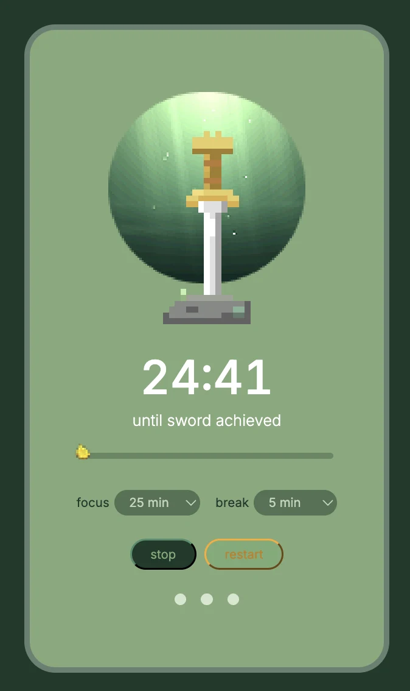

Pomodoro-timer · 2026
Korok Timer
En fokustimer inspirert av Korok-skogen. Trekk mestersverdet, én fokusøkt om gangen.
Pomodoro-timer · 2026
En fokustimer inspirert av Korok-skogen. Trekk mestersverdet, én fokusøkt om gangen.
Korok Timer er en Pomodoro-timer laget for å hjelpe deg å holde fokus. I stedet for en vanlig nedtelling blir hver fokusøkt en del av en liten historie: du jobber deg mot å trekke mestersverdet fra steinen.
Målet var en timer som føles enkel, rolig og litt lekent, med visuell inspirasjon fra Korok-skogen i The Legend of Zelda.
«Fullfør tre fokusøkter for å fylle hjertebeholderne og vinne sverdet.»
Sverdet står i en glødende skogssirkel i pikselkunst. Mens tiden går, fylles fremdriftslinjen, og et lite Korok-frø spretter langs kanten. Tre prikker viser hvor mange økter du har fullført, og blir grønne én etter én.

Velg fokustid (15, 25, 45 eller 60 min) og pausetid (5, 10 eller 15 min).
Når en fokusøkt er ferdig, går timeren over til pause, og tilbake igjen.
Fylles opp mens tiden går, med et Korok-frø som spretter langs kanten.
Tre prikker blir grønne for hver fullførte økt. Alle tre gir deg mestersverdet.
Innstillingene låses mens timeren går, så du ikke endrer økten ved et uhell.
Animasjonene skrus av for brukere som foretrekker mindre bevegelse.
Ingen rammeverk eller biblioteker. Appen hostes på GitHub Pages.
Kjernefunksjonene er ferdige. Neste steg kan være: